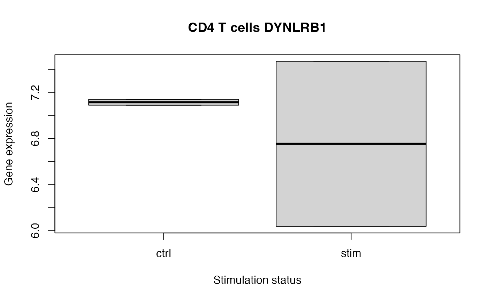

Test the association between a covariate of interest and the response's deviation from expectation.
Details
This method performs a test of differential variance between two subsets of the data, in a way that generalizes to multiple categories, continuous variables and metrics of spread beyond variance. For the two category test, this method is simular to Levene's test. This model was adapted from Phipson, et al (2014), extended to linear mixed models, and adapted to be compatible with variancePartition::dream() and dreamlet::dreamlet().
This method is composed of multiple steps where 1) a typical linear (mixed) model is fit with dreamlet(), 2) residuals are computed and transformed based on an absolute value or squaring transform, 3) a second regression is performed with dreamlet() to test if a variable is associated with increased deviation from expectation. Both regression take advantage of the dreamlet() linear (mixed) modelling framework followed by empirical Bayes shrinkage that extends the limma::voom() framework.
Note that diffVar() takes the results of the first regression as a parameter to use as a starting point.
See also
variancePartition::diffVar(), missMethyl::diffVar()
Examples
library(muscat)
library(SingleCellExperiment)
data(example_sce)
# create pseudobulk for each sample and cell cluster
pb <- aggregateToPseudoBulk(example_sce,
assay = "counts",
cluster_id = "cluster_id",
sample_id = "sample_id",
verbose = FALSE
)
# voom-style normalization
res.proc <- processAssays(pb, ~group_id)
#> B cells...
#> 0.22 secs
#> CD14+ Monocytes...
#> 0.33 secs
#> CD4 T cells...
#> 0.24 secs
#> CD8 T cells...
#> 0.14 secs
#> FCGR3A+ Monocytes...
#> 0.29 secs
# Differential expression analysis within each assay,
# evaluated on the voom normalized data
res.dl <- dreamlet(res.proc, ~group_id)
#> B cells...
#> 0.23 secs
#> CD14+ Monocytes...
#> 0.27 secs
#> CD4 T cells...
#> 0.24 secs
#> CD8 T cells...
#> 0.14 secs
#> FCGR3A+ Monocytes...
#> 0.25 secs
# Differential variance analysis
# result is a dreamlet fit
res.dvar <- diffVar(res.dl)
# Examine results
res.dvar
#> class: dreamletResult
#> assays(5): B cells CD14+ Monocytes CD4 T cells CD8 T cells FCGR3A+
#> Monocytes
#> Genes:
#> min: 531
#> max: 1130
#> details(7): assay n_retain ... n_errors error_initial
#> coefNames(2): (Intercept) group_idstim
# Examine details for each assay
details(res.dvar)
#> assay n_retain formula formDropsTerms n_genes n_errors
#> 1 B cells 4 ~group_id FALSE 847 0
#> 2 CD14+ Monocytes 4 ~group_id FALSE 1130 0
#> 3 CD4 T cells 4 ~group_id FALSE 897 0
#> 4 CD8 T cells 4 ~group_id FALSE 531 0
#> 5 FCGR3A+ Monocytes 4 ~group_id FALSE 1086 0
#> error_initial
#> 1 FALSE
#> 2 FALSE
#> 3 FALSE
#> 4 FALSE
#> 5 FALSE
# show coefficients estimated for each cell type
coefNames(res.dvar)
#> [1] "(Intercept)" "group_idstim"
# extract results using limma-style syntax
# combines all cell types together
# adj.P.Val gives study-wide FDR
topTable(res.dvar, coef = "group_idstim", number = 3)
#> DataFrame with 3 rows and 9 columns
#> assay ID logFC AveExpr t P.Value adj.P.Val
#> <character> <character> <numeric> <numeric> <numeric> <numeric> <numeric>
#> 1 CD4 T cells DYNLRB1 0.978587 0.525150 1179.42 1.28303e-11 1.91186e-08
#> 2 CD4 T cells RNPS1 1.103936 0.686623 1002.75 2.36305e-11 1.91186e-08
#> 3 CD4 T cells SLFN5 0.818186 0.444949 964.08 2.74004e-11 1.91186e-08
#> B z.std
#> <numeric> <numeric>
#> 1 18.1794 1179.42
#> 2 17.6567 1002.75
#> 3 17.5220 964.08
# Plot top hit to see differential variance
# Note that this is a toy example with only 4 samples
cellType <- "CD4 T cells"
gene <- "DYNLRB1"
y <- res.proc[[cellType]]$E[gene, ]
x <- colData(res.proc)$group_id
boxplot(y ~ x,
xlab = "Stimulation status",
ylab = "Gene expression",
main = paste(cellType, gene)
)

#